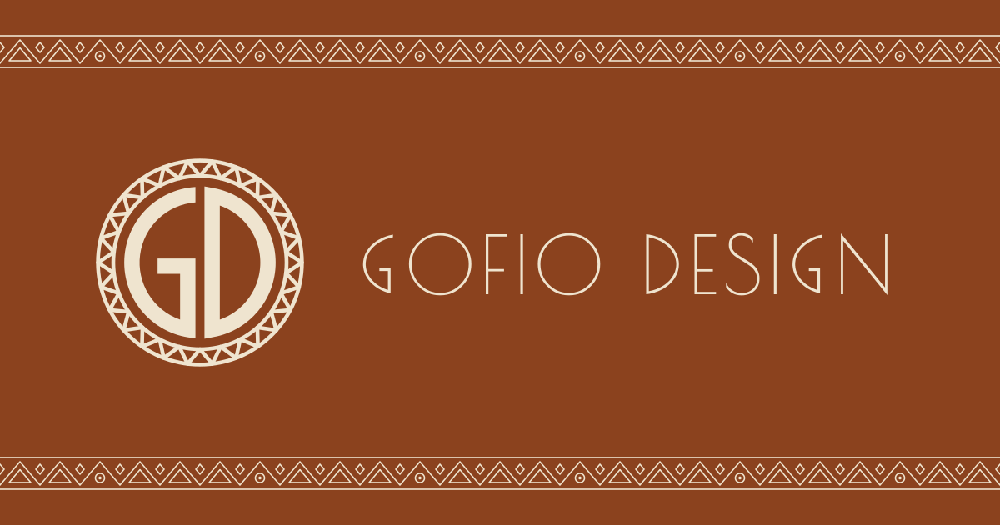

Sello claro
Para pies claros: marrón sobre crema.
<a href="https://gofiodesign.eu/" rel="noopener"><img src="https://gofiodesign.eu/assets/sello/un-proyecto-gofio-design-claro.svg" alt="Un proyecto Gofio Design" width="251" height="64" /></a>Logotipo pintadera, título y normas de uso en SVG, con los textos convertidos a trazos.
#8B421E · fondo#59220D · texto sobre ámbar#EFE4CF · tinta y texto#554242 · tinta sobre claro#E6B458 · acento y botónPara el pie de las webs que hacemos. La imagen se sirve desde gofiodesign.eu, así que cuando cambie la marca se actualiza sola en todas. Pega el código tal cual; se ve bien a partir de 200 px de ancho.
Para pies claros: marrón sobre crema.
<a href="https://gofiodesign.eu/" rel="noopener"><img src="https://gofiodesign.eu/assets/sello/un-proyecto-gofio-design-claro.svg" alt="Un proyecto Gofio Design" width="251" height="64" /></a>Para pies oscuros: crema sobre barro.
<a href="https://gofiodesign.eu/" rel="noopener"><img src="https://gofiodesign.eu/assets/sello/un-proyecto-gofio-design-oscuro.svg" alt="Un proyecto Gofio Design" width="251" height="64" /></a>
Uso principal, sobre barro

Sobre fondos claros; impresión a una tinta
Solo como acento, nunca para texto

Pintadera y título en línea
Pintadera y título en línea

Pintadera encima, título debajo
Pintadera encima, título debajo
«GOFIO DESIGN» sobre barro

«GOFIO DESIGN» sobre claro
Solo las letras, para tamaños pequeños
Solo las letras, para tamaños pequeños
512 × 512, barro a sangre

Solo el GD, crema sobre barro

1200 × 630